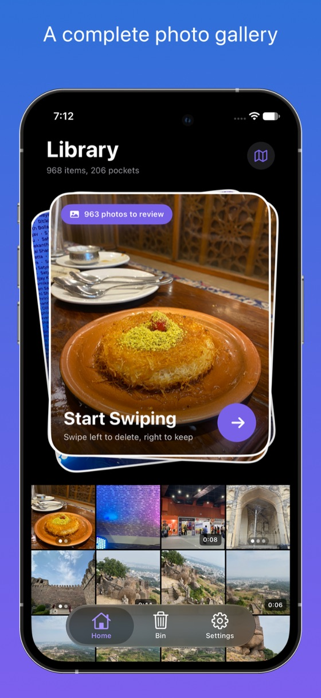
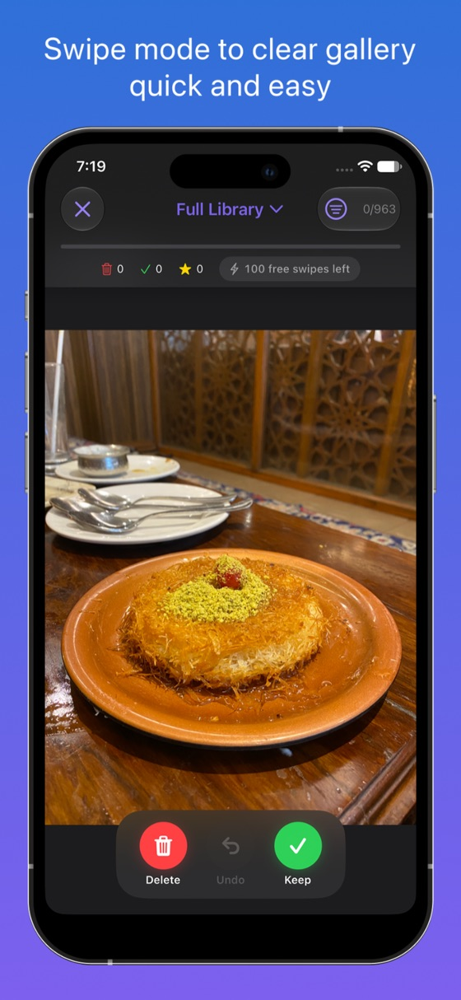
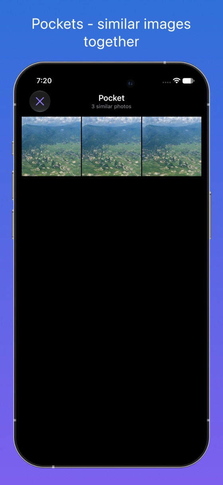
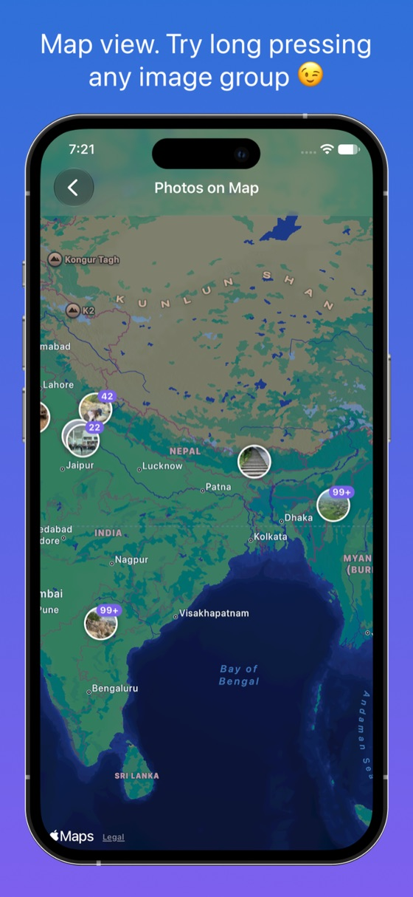

Free to download. Private by design.
Your next
favorite gallery.
Browse your photos and videos. Find related shots in Pockets.
Revisit places. Tidy up when you choose.
Free with in-app purchases · iPhone & iPad
Try your
own camera roll.
Download Photoso free ↗
This preview uses three sample images, not your library. Drag left to Bin or right to Keep. Use the buttons or the left and right arrow keys. You can undo any decision.
Photo Map / Place Reveal
Your places.
On replay.
Long-press a place. Watch the map fly into a reel of your photos.
Save the reveal as a vertical video.
Make your own map reelIllustrated web preview. Sample photos, not an app recording.
Ready to preview the map-to-memory reveal.
Your everyday gallery
Browse freely.
Find your moments.




A few details.
Support ↗Is Photoso free?
Yes. Browsing your photo library, Pockets, Photo Map, and the Review Bin are available for free. Cleanup includes 100 free swipes a day; reaching that limit does not stop you browsing your gallery or reviewing the Bin. Photoso Pro adds unlimited swipes, similar-photo group review, stats and streaks, and keep marks that persist across reinstalls. Pro is available monthly, yearly, or as a one-time Lifetime purchase. See the app for current local pricing.
Does a swipe delete my photo right away?
No. Unwanted items go to Photoso's Review Bin first, where you can restore them. Deletion happens only after you review and confirm. Confirmed deletions go to Apple Photos' Recently Deleted album for recovery for up to 30 days. Photoso isn't a backup service; back up irreplaceable photos.
What happens if I use iCloud Photos?
With iCloud Photos enabled, confirmed deletions also apply to your other devices. Recently Deleted is the place to recover a photo for up to 30 days. Storage may not be freed immediately while deleted items remain there.
Are my photos private?
Photoso doesn't upload your photos. It has no third-party ads, analytics, or tracking SDKs. Pocket similarity matching uses Apple's on-device Vision; your photos aren't sent to a cloud AI service. You don't need an account. Apple's own iCloud Photos syncing still follows your Apple settings, and maps and place names use Apple's services. See our privacy policy.
iPhone, iPhone Duo, or iPad?
Photoso works on iPhone and iPad with iOS or iPadOS 17.6 or later. It also adapts to iPhone Duo's compact and expanded displays. It uses your Apple Photos library and needs permission to access your photos.
How do Pro subscriptions work?
Payment is charged to your Apple Account when you confirm a purchase. Monthly and yearly subscriptions renew automatically unless cancelled at least 24 hours before the current period ends. Your account is charged for renewal within 24 hours before the period ends. Manage or cancel in your App Store account settings. Lifetime is a one-time purchase. Apple's standard Terms of Use apply.